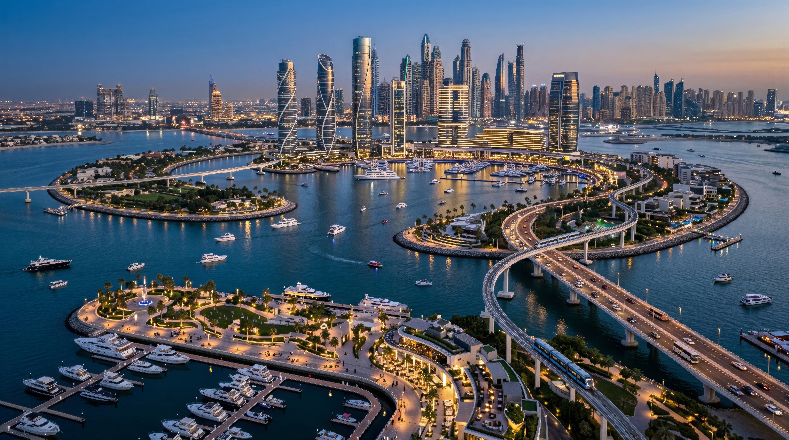
Waikiki Látnivalói
Fedezd fel a világ legkülönlegesebb országát, ahol az ultramodern metropoliszok, az ókori építészet mesterművei, az érintetlen trópusi paradicsomok, a burjánzó vadregényes esőerdők és a hófödte hegycsúcsok egyetlen nemzet határain belül találkoznak.
A világ leglátogatottabb városa
Nova Aurelia nemcsak Waikiki, hanem az egész világ fővárosa. Hatalmas felhőkarcolóival, kormányzati negyedével és évezredes ókori műemlékeivel méltán nyerte el a világ legszebb városa címet. A hétmillió lakosa mellett évente 35 millió látogató keresi fel a metropoliszt.
Történelmi Értékek
Az azték építészet remekművei, a Római Birodalom grandiózus hagyatéka és az angol klasszicista kastélyok alkotják a város páratlan történelmi magját.
Modern Csodák
A világ legmagasabb és legmerészebb felhőkarcolói formálják a lenyűgöző sziluettet, amelyet a Világkormány székhelyének három tornya koronáz meg.
Luxus és Kényelem
A Hotel President 15 csillagos pompájától a Paradise Islands vízi villáiig a Starlight Hotels és más világmárkák felejthetetlen élményeket kínálnak.
Szórakozás és Kaland
Disneyland, Legoland, a világ legnagyobb állatkertje és az Aqua World mind Nova Aureliában várja a családokat és a kalandvágyó turistákat.
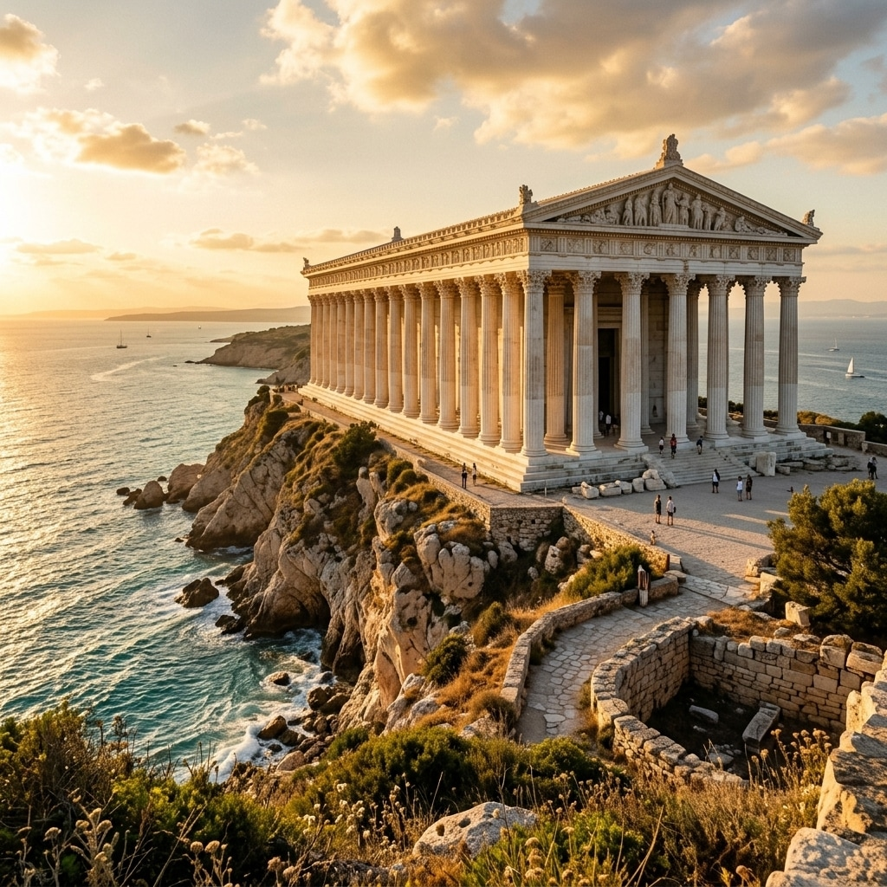
Történelmi Épületek
Waikiki a történelem során számtalan birodalom része volt, és ez a gazdag örökség ma is áthatja Nova Aurelia utcáit. Az ókori római településtől az angol gyarmati korszakon át a modern fővárosig minden korszak maradandó nyomot hagyott.
- Római templom: 100 tökéletesen egyforma márványoszlop, amelyek a nap állásától függően változtatják színüket. A templom az ókori kőfaragók mesterségének páratlan emléke.
- Lépcsős piramis: 24 méter magas, több mint 2000 éves azték kultikus építmény, amelynek elhelyezkedése figyelemre méltó csillagászati ismeretekről tanúskodik.
- Városfalak: A Római Birodalom leghosszabb, épségben fennmaradt falszakasza és tizenkét monumentális kapuja, amelyeket egyenként 50 000 kerámiatéglából emeltek.
- Nemzeti Múzeum: Michelangelo Dávid-szobrának és Botticelli remekműveinek másolatai mellett a legmodernebb multimédiás eszközök segítségével elevenedik meg a művészet.
Toronyházak és Üzleti Negyed
Nova Aurelia látképét a világ legmerészebb mérnöki alkotásai uralják. Az üzleti negyedben a legnagyobb nemzetközi vállalatok központjai sorakoznak, a sziluettet pedig ikonikus épületek formálják.
- Sky City: A világ legmagasabb épülete, amely 956 méteres magasságával és 220 emeletével az égbe nyúlik. A rekordméretű szökőkútrendszert 6 600 fényforrás világítja meg.
- Infinity Tower: A világ egyetlen 90 fokban megcsavart toronyháza, amely 2009-es elkészülte óta Waikiki egyik jellegzetes szimbóluma.
- Világkormány Központ: Három hatalmas torony, amelyeket a tetejükön egy parkosított, medencékkel és éttermekkel ellátott platform köt össze.
- Royal Towers: Exkluzív panorámás luxus apartmanok saját Michelin-csillagos éttermekkel, kaszinóval és jachtkikötővel.
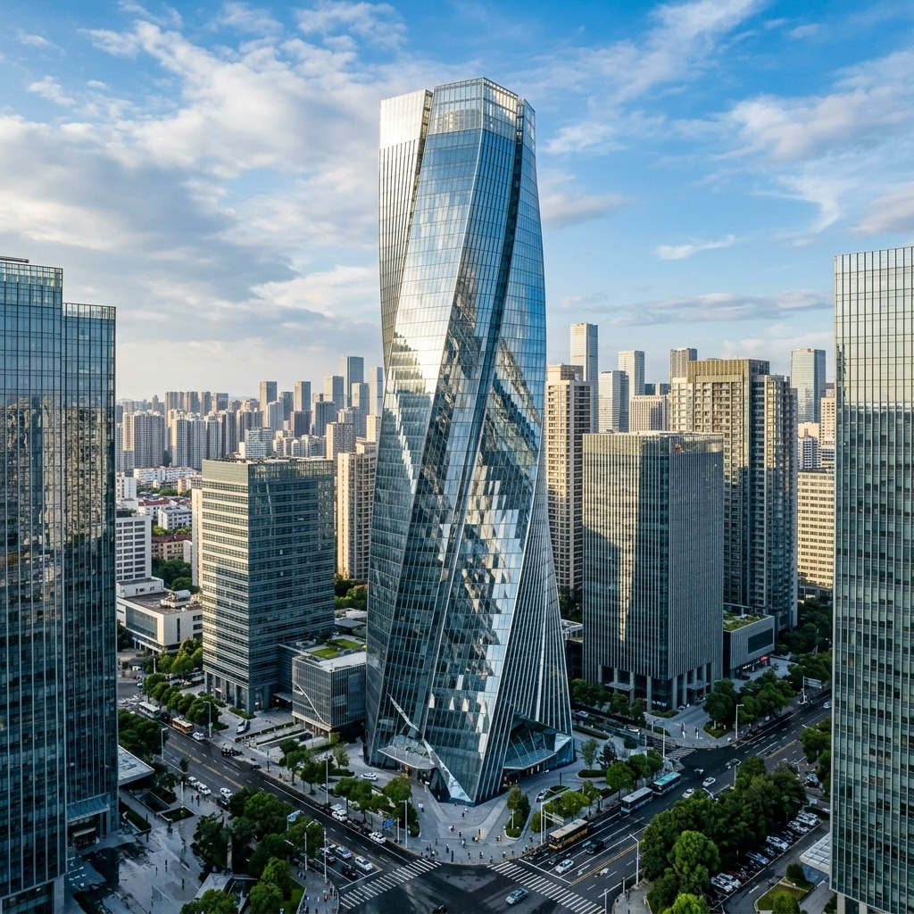
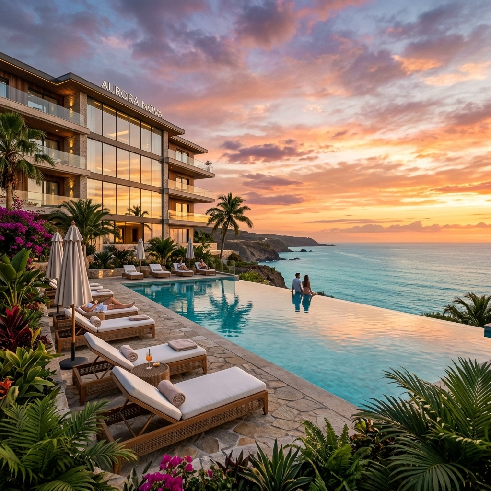
Luxus Szállodák
Waikiki a prémium turizmus fellegvára. A szigetország szállodái a kényelem és az exkluzivitás legmagasabb szintjét képviselik, ahol a vendégek a világ legkülönlegesebb helyszínein pihenhetnek.
- Hotel President: A világ egyetlen 15 csillagos szállodája, 1600 m²-es elnöki lakosztállyal és föld alatti wellness- és termálfürdő komplexummal.
- Hotel Atlantis: Víz alatti lakosztályok, ahol a tenger élővilága közvetlenül az ablak túloldalán úszik el. Négy tornya közül a legmagasabb 600 méter.
- Hotel Khalifa: A Pálma-szigeten fekvő 10 csillagos resort a világ egyik legnagyobb aquaparkjával, ahol pincérek egész nap finom ételekkel kínálják a vendégeket.
- Paradise Islands: Vízre épült villák a Kaméleon-szigeten, ahonnan a teraszról közvetlenül figyelhetők a delfinek és a korallzátony élővilága.
Királyi Paloták
A kormány vezetőinek és a királyi családnak otthont adó rezidenciák a világ legértékesebb ingatlanjai. Minden palota a legmagasabb technológiai színvonalat ötvözi a klasszikus elegancia időtlen szépségével.
- Hercegi Palota: Raimondo herceg mintegy 80 milliárd dollár értékű otthona, amely saját koncerttermet, aquaparkot, mozit és 2,5 km-es privát partszakaszt foglal magában.
- Jennifer Palotája: 90 hektáros botanikus kerttel körülvett tengerparti rezidencia, ahol 1,5 kilométernyi partszakasz kínál háborítatlan nyugalmat.
- Chease és Jessica villája: A legendás Ludwig Mies van der Rohe által tervezett ultramodern üvegpalota, amelyet egy kisebb dzsungel és vízesések vesznek körül.
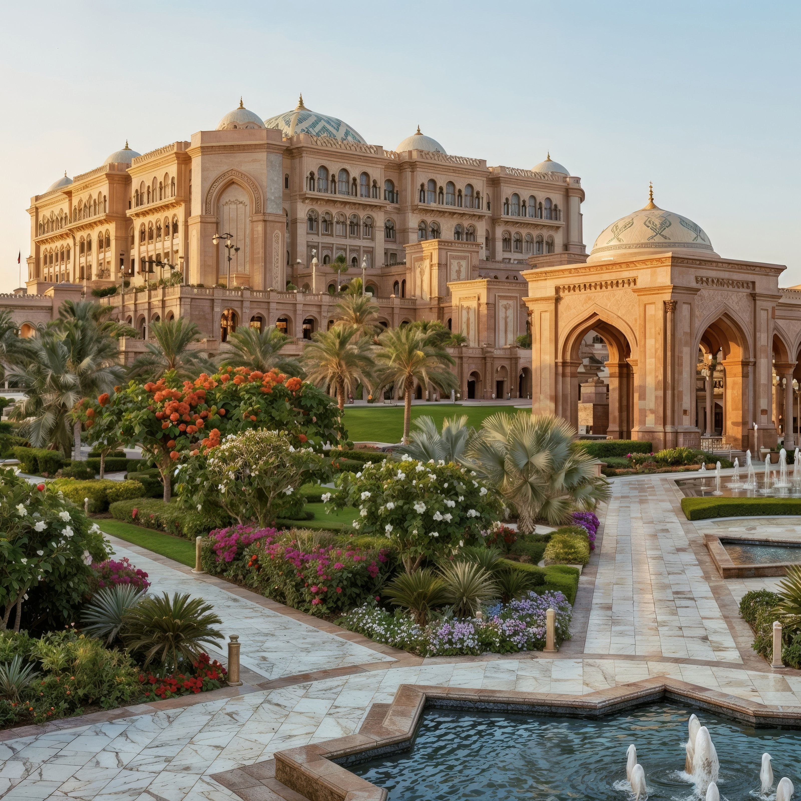
Szórakoztató Parkok
Családi kikapcsolódás világszínvonalon. Nova Aurelia a szórakoztatóipar egyik globális központja, ahol a világ leghíresebb tematikus parkjai várják a látogatókat.
Disneyland és Legoland
Waikiki két Disneylanddel és három Legoladdal büszkélkedik. A riói Legolandben több mint 90 millió LEGO kockát használtak fel a világ nagyvárosaink miniatűr makettjeihez.
Aqua World
A világ legnagyobb vízi vidámparkja több mint 80 csúszdával és 40 medencével. A 75 méter magas „Mount Everest" csúszdán akár 110 km/h sebességet is elérhetünk.
Nova Aurelia Állatkert
A világ legnagyobb állatkertje, ahol a legegzotikusabb állatokkal is testközelből találkozhatunk. Sarki kupola, fedett őserdei kifutó és állandó delfin show-k várják a látogatókat.
Kennedy Űrközpont
Az amazóniai nyaralás során nem hagyható ki a Kennedy Space Center, ahol kipróbálhatjuk a leszálló modul irányítását és megkóstolhatjuk az űrhajósok ételeit.
Waikiki Regionális Csodái
A fővároson túl egy egész világ tárul fel: érintetlen természeti tájak, trópusi paradicsomok, őserdők és hófödte hegycsúcsok, amelyek egyetlen nemzet határain belül kínálnak felejthetetlen élményeket.
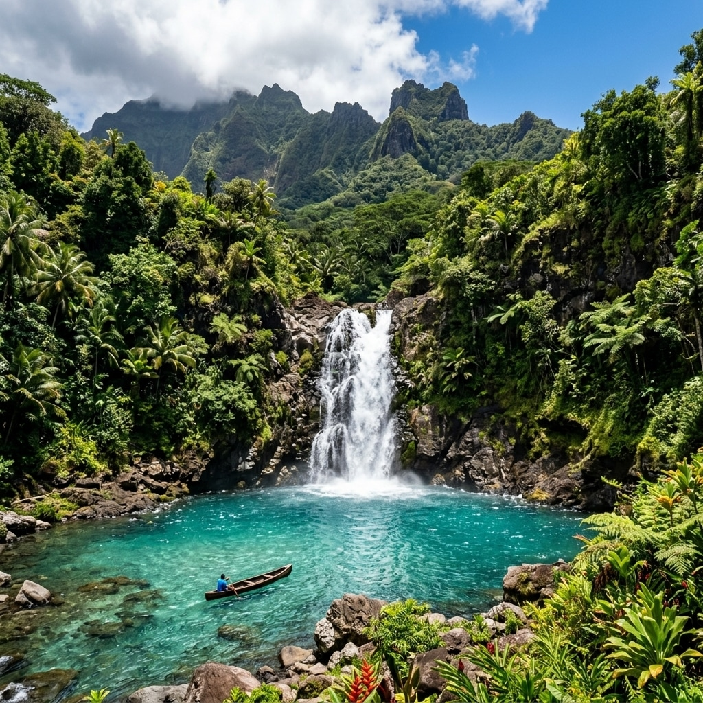
Természeti Csodák
Waikiki nemcsak az építészet, hanem a természet szentélye is. A fenséges vulkanikus hegycsúcsoktól a kristálytiszta lagúnákba ömlő vízesésekig minden tájegység egyedi varázslatot rejt, amelyhez foghatót kevés helyen találunk a világon.
- Vulkanikus Csúcsok: A szigetvilág gerincét alkotó hegyláncok túraútvonalai lélegzetelállító panorámát kínálnak a Csendes-óceán végtelen horizontja felett.
- Éden-vízesés: A dzsungel mélyén rejtőző, 80 méter magas vízesés alatt természetes türkiz medencék várják a fürdőzőket, távol a civilizáció zajától.
- Geotermikus Források: Természetes gyógyvizek és forró vizes tavak a hegyek lábánál, ahol az ősi vulkanikus tevékenység termális kincseket hozott a felszínre.
Trópusi Szigetvilág
A Waikiki-szigetvilág több száz kisebb-nagyobb szigete a világ legexkluzívabb pihenőhelye. A fehér homokos partok, a türkizkék lagúnák és a korallzátonyok páratlan élővilága minden képzeletet felülmúl.
- Pálma-szigetek: Mesterséges és természetes szigetek luxusvillákkal, privát partszakaszokkal és számos híresség nyaralójával.
- Világ-szigetcsoport: A Föld kontinenseit formázó szigetcsoport, ahol különböző kultúrákat és hagyományokat bemutató múzeumok és szórakoztató parkok várják a látogatókat.
- Korallzátonyok: A búvárok paradicsoma, ahol a biodiverzitás a világon a legmagasabb, így a 28 fokos vízben naphosszat csodálhatjuk a fantasztikus élővilágot.
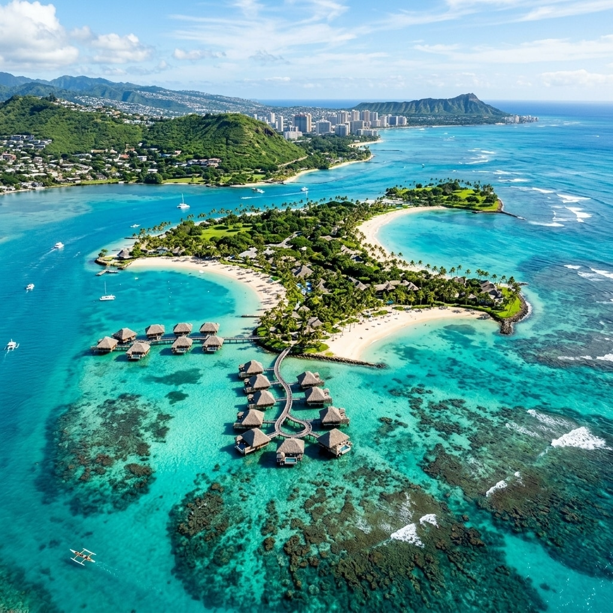
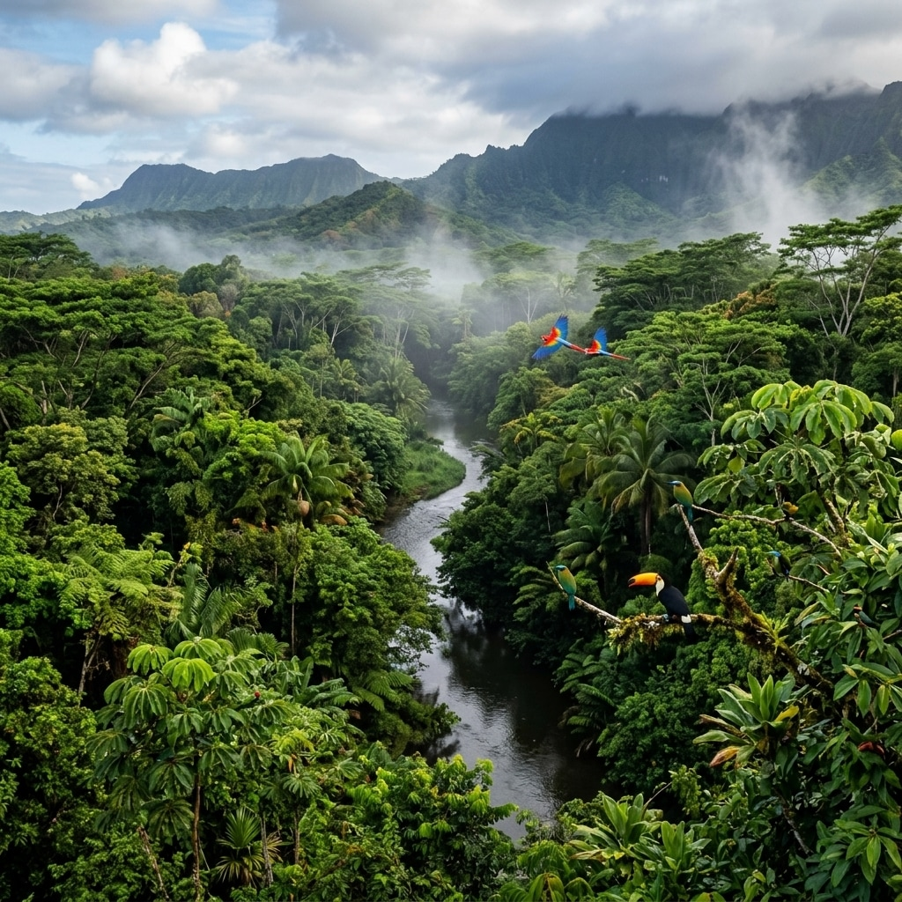
Érintetlen Esőerdők
Waikiki amazóniai tartományai a Föld tüdejét őrzik. A burjánzó zöld növényzet és a rendkívül gazdag állatvilág a kalandvágyó utazók számára tartogat felejthetetlen élményeket, miközben a Zöld Waikiki program biztosítja a természeti értékek megőrzését.
- Biodiverzitás: Több ezer madárfaj, színpompás papagájok, tukánok és ritka orchideák hazája, amely a világ egyik leggazdagabb ökoszisztémáját alkotja.
- Lombok feletti túrák: Speciális függőhidakon sétálva ismerhetjük meg az esőerdő felső szintjének rejtett életét és lenyűgöző madártávlatból csodálhatjuk meg a koronaszintet.
- Folyami Expedíciók: Kenuval fedezhetjük fel az esőerdő mélyén kanyargó titokzatos folyókat, ahol kajmánok és folyami delfinek kísérik az utunkat.
Hófödte Síparadicsomok
Waikiki egyik legnagyobb meglepetése a magashegységek örök hava. A legmodernebb sífelvonók és luxus chaletek várják a téli sportok szerelmeseit, mindezt trópusi tengerpartok közvetlen közelében, így a délelőtti síelés után délután már szörfözhetünk is.
- Prémium Pályák: Világszínvonalú sí- és snowboard pályák minden nehézségi szinten, tökéletesen kezelt hófelületekkel az egész szezonban.
- Hegyi Üdülőhelyek: Exkluzív fa chaletek kandallóval, panorámás wellness részlegekkel és Michelin-csillagos hegyi éttermekkel.
- Helisí: A legelszántabb sportolók számára helikopteres szállítást biztosítunk az érintetlen, szűz porhóval borított lejtőkhöz.
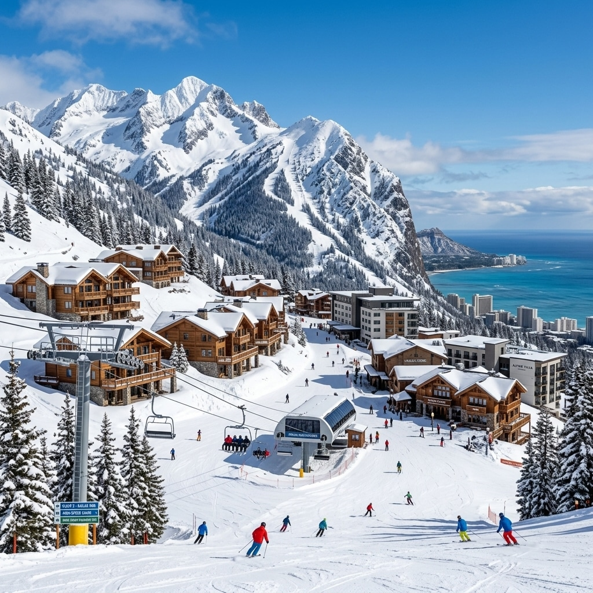
Fővárosunk régen és ma
Nova Aurelia fejlődése páratlan a világtörténelemben. A római településtől a modern világkormány székhelyéig hosszú út vezetett, melynek során a város megőrizte lelkét és kincseit.
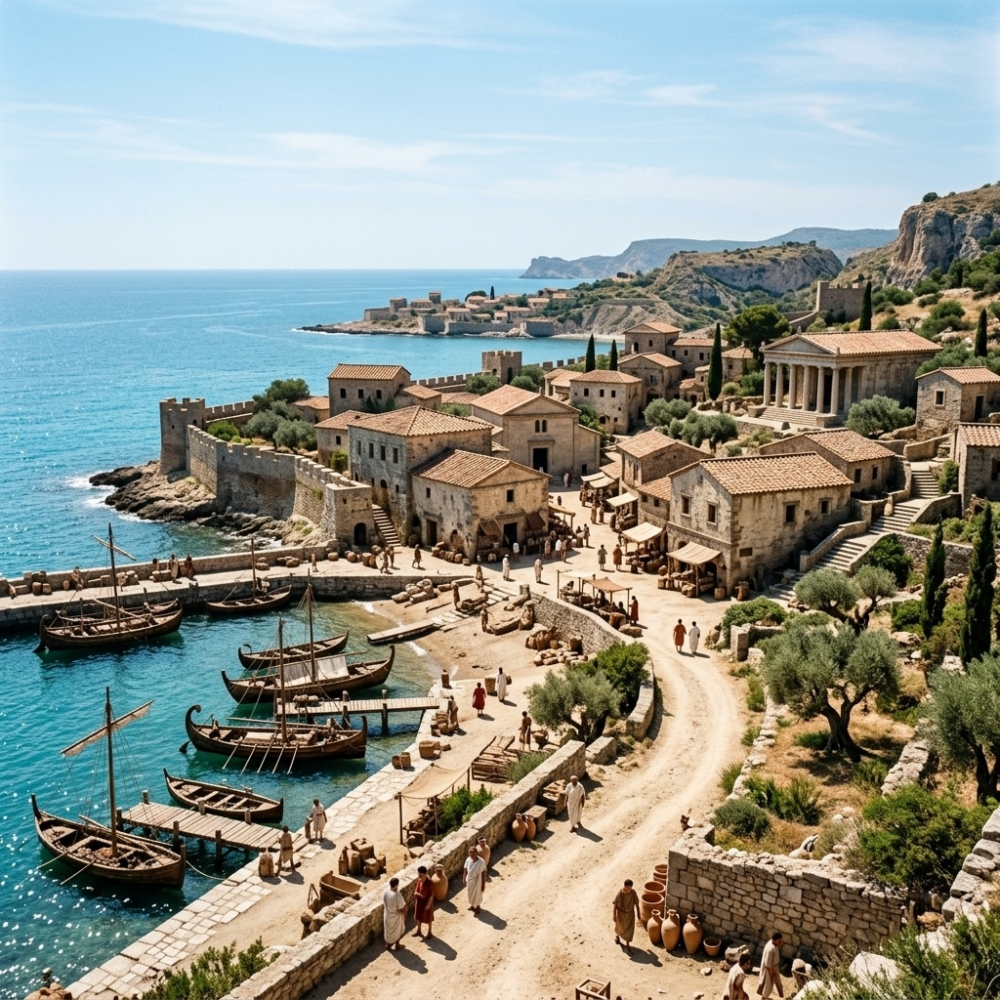
Ókori Vaikikia
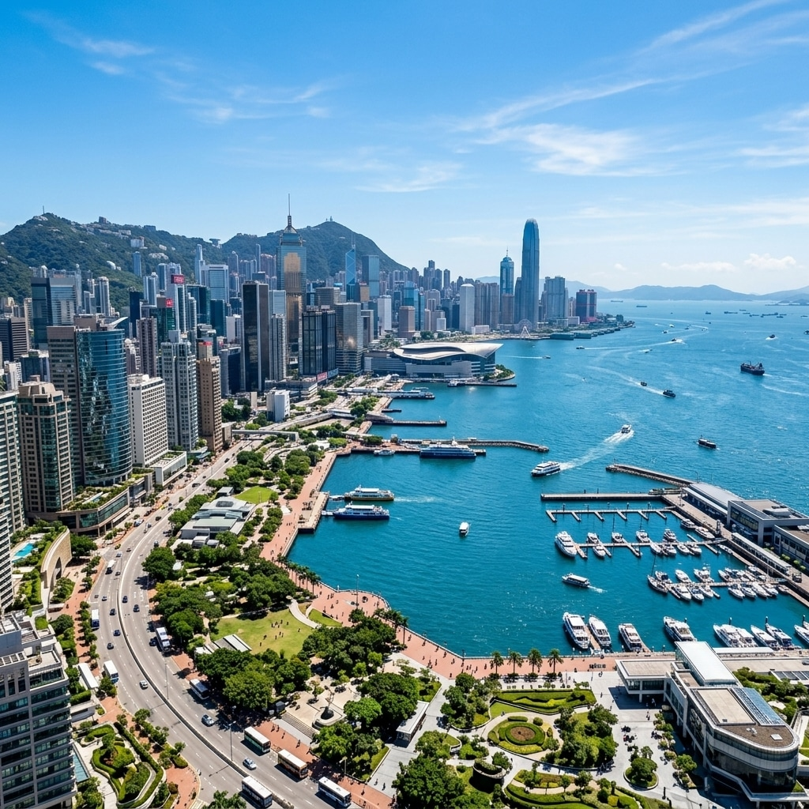